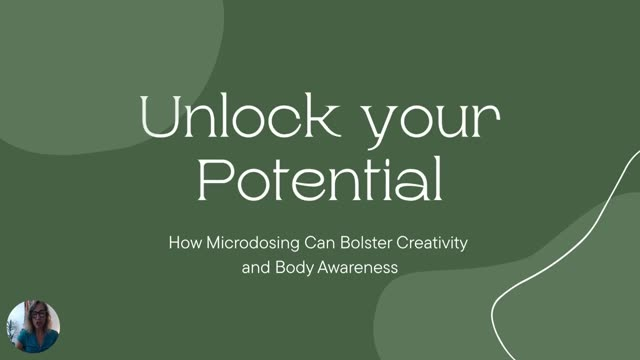
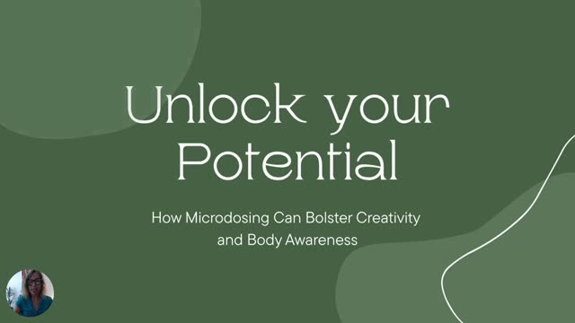
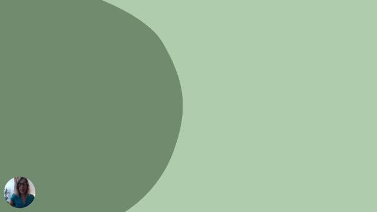

Presentation design portfolio
Slides that help a big idea land.
I'm a project manager who has designed presentations since 2012 for webinars, live events, online programs and Facebook Lives. Keynote is my home base, and presentation design is the part of my work I love most.
A quick note about what you'll see here. The presentations I designed for past clients and employers belong to them, so when I moved on, I left that work where it belonged.
Below are the pieces I still have access to. I'd be glad to walk you through my process and the projects I can't show on a call.
Webinar · A Mindful Emergence
Unlock Your Potential
A live sales webinar for a psychedelic-assisted therapy company. The subject needed care, so I kept the deck calm: a soft green palette, organic shapes and plenty of white space. Points build in one at a time to match the pace of the talk, and the deck ends on a clear program offer.
The first 80 seconds of the recorded webinar, showing how the slides build.
Online program · Bill Baren Coaching
Coaching program, Module 4
Slides for a multi-week online training program for coaches. Each principle gets a single bold photo and a short headline so it's easy to remember. Yellow "Open Handout" tags link each slide to the matching workbook page, so students always know where to look.
How I work
From outline to stage in four steps
Every deck goes through the same four steps, whether it's a 20-minute webinar or a full online program. The examples below come from the A Mindful Emergence and Bill Baren decks above.
Storyboard
I map the talk slide by slide before designing anything, so each slide has one job and the story builds to the ask.
Style
I set the palette, type and image style from the brand and the room, then keep them consistent from the title slide to the thank-you.
Build
I design the slides in Keynote and build systems where they help, like the "Open Handout" tags that tie each slide to its workbook page.



Animate
I add motion only where it helps the story. Here the background shape slides across to become the agenda, so the title flows into the talk.
Redesign study
Before and after
Two everyday slides, redesigned to show how I think. Neither is client work. The first uses real podcast results from my own projects.
Podcast Results 2020-2024
- Downloads grew from 2.54M in 2020 to 3.98M in 2024
- This is a 56.7% increase in downloads
- Growth came from:
- Content planning
- Audience targeting
- Performance optimization
- 23M total downloads overall
- Show notes are 40% faster with AI tools
The original made the audience read six bullets to find one point. The redesign leads with that point as one big number, then lets two bars show the growth. The process details can go in the speaker's words or an appendix.
Webinar Agenda
- Welcome and introductions (5 min)
- Who this is for and what you will learn (5 min)
- Teaching: the three main ideas (25 min)
- Case study from a past client (10 min)
- The offer, pricing and bonuses (10 min)
- Q&A and close (5 min)
Sixty minutes, four moves
Six equal bullets hid the shape of the talk. The timeline groups them into four moves and sizes each one by time, so the audience can see where the hour goes.
Animated explainer · McFall Productions
Back Catalog Goldmine overview
A two-minute animated overview for the podcast production company I co-founded. It's built like a presentation, with one idea per scene, a simple palette and motion that shows the problem and the fix.
Short-form video · The School of Greatness with Lewis Howes
Reels
Vertical clips cut from full podcast episodes for McFall Productions client Lewis Howes. Each one opens with a strong hook and uses on-screen captions, so the story works with the sound on or off.
Kind words
From the people I've worked with
Lauren is a talented team member, with a natural thinking for details and strategy. Lauren was always on top of her projects, meeting avalanches of important deadlines, which usually involved coordinating many details to several different stakeholders.
Bill BarenBill Baren Coaching
Lauren has an extraordinary ability to align creative, technical, and operational teams, ensuring clear communication and efficient workflows. Her leadership on our podcast helped it surpass 23 million downloads by streamlining production with automation and AI tools, cutting creation time significantly. With her organizational skill, technical expertise, and calm, solutions-oriented approach, Lauren has had a lasting impact on our growth and success.
JJ VirginJJ Virgin / Reignite Wellness
More of my work
Sales pages and a conversation
Sales page design
To see my sales page design, visit mcfallprod.com. I designed it for McFall Productions, the podcast production company I co-founded.